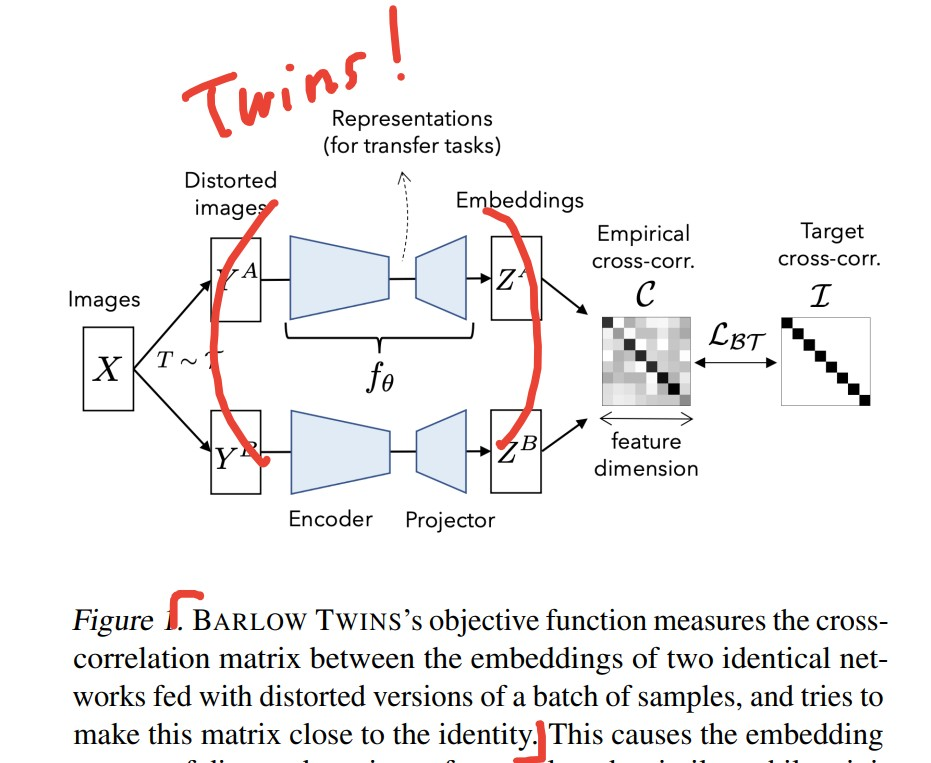
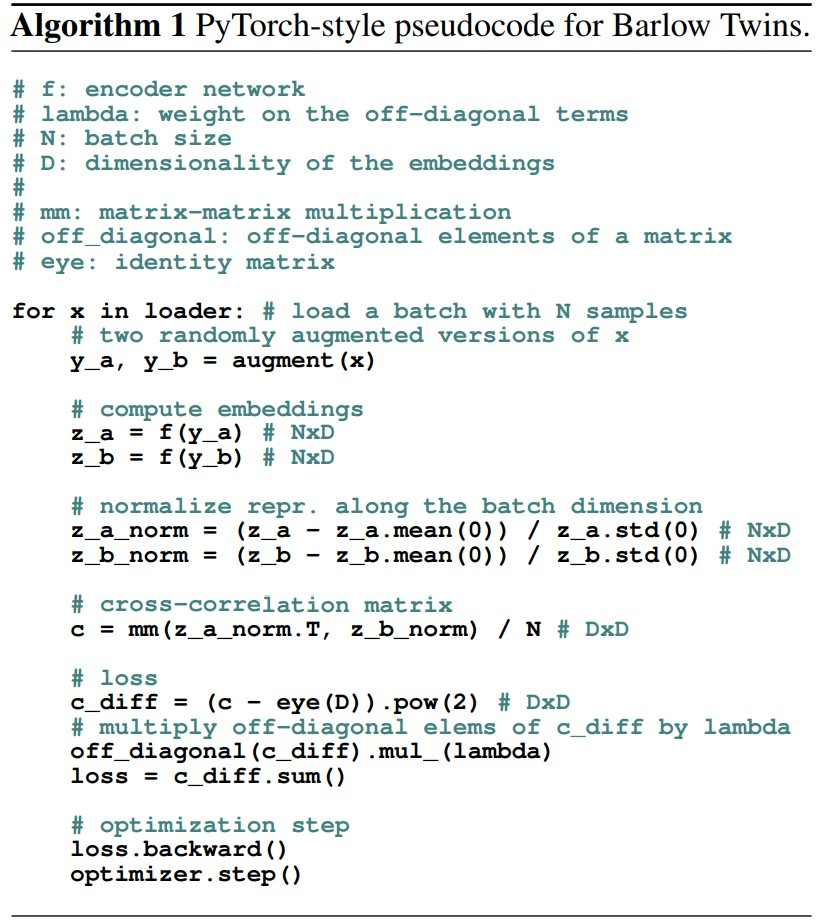

IPCG Lab에서 교수님께 제안 받아 연구하기 시작한 BT-VAE에 대해 정리해놓은 문서입니다.

Barlow-Twins 이름의 유래는
영국의 신경학자 Horace Barlow의 이름과 2개의 Encoder가 쌍둥이 같다하여 붙혀진 이름이다.
Horace Barlow의 논문,
Possible Principles Underlying the Transformations of Sensory Messages에서
중복성 감소의 원리에 아이디어를 얻어 독립적인 요소를 추출 하는 방법을 얻었다.
"We propose an objective function that naturally avoids collapse by measuring the cross-correlation matrix between the outputs of two identical networks fed with distorted versions of a sample, and making it as close to the identity matrix as possible."
논문의 원문에 의거하면, 두개의 증강된 샘플이 입력된 동일한 네트워크 출력간의
교차 상관 행렬을 구하고, 단위 행렬에 최대한 가깝게 만들어가며 붕괴를 자연스럽게 방지한다.

코드레벨에서 보면 다음과 같은데,
agument(x)에서 두개의 증강을 얻은 뒤, 동일한 네트워크 f(x)에 통과시킨다.
그에 따라 나온 결과를 z_a, z_b라 했을 때, 두개의 행렬을 곱한 뒤 단위 행렬에 가깝게 만든다.
같은 네트워크 (샴 쌍둥이)를 통과 시킨 결과값의 두 행렬의 교차 상관 행렬을
단위 행렬에 가깝게 만든다는 것은,
서로 다른 차원간의 상관 계수 $C_{ij}$을 0으로 만들고 $C_{ii}$를 1로 만든다는 것인데
다른 특징을 뽑아내는 차원의 연관을 0으로 만들어 중복성을 제거하고,
같은 특징을 뽑아내는 차원의 연관을 1로 고유한 특징을 뽑아낸다.
먼저 Invariance term에 대해 알아보자.
주어진 교차 상관 행렬 $C$에서 $C_{ii}$ 즉, 같은 차원끼리의 상관계수를 1로 만드는 것을 목표로 한다.
Invariance (불변성)이라는 이름에 맞게,
두개의 증강 이미지에서 나온 값 $C_i$와 $C_j$에서 동일한 핵심을 뽑아 내는 것을 강제하도록 한다.
주어진 교차 상관 행렬 $C$에서 $C_{ij}$ 즉, 다른 차원끼리의 상관계수를 0로 만드는 것을 목표로 한다.
Redundancy reduction (중복성 감소)역시 이름은 걸맞게
두개의 증강 이미지에서 나온 값 $C_i$와 $C_j$에서 같은 특징을 추출하지 않도록 강제한다.
여기서 $\lambda$는 불변성과 중복성 감소 항의 학습을 조율하는 가중치이다.